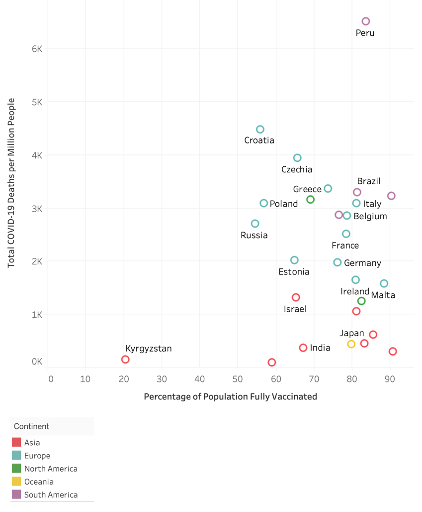
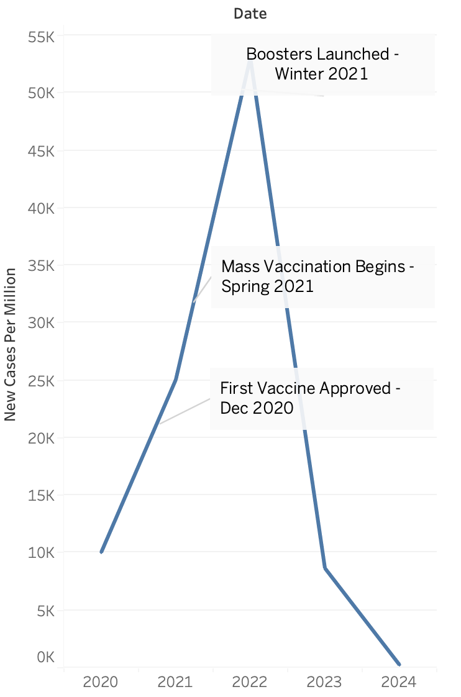
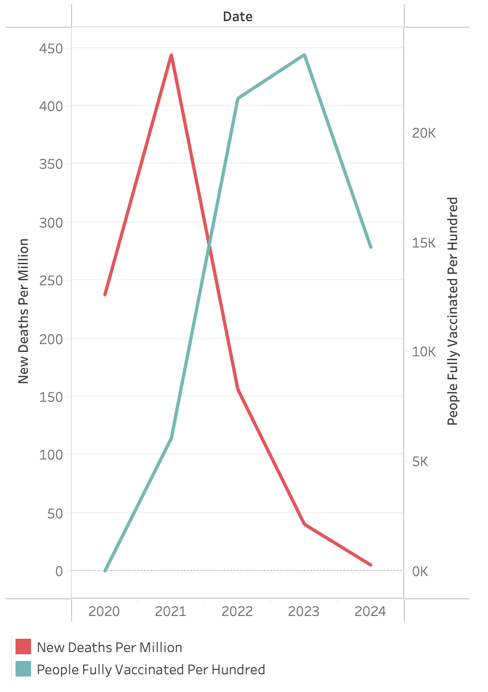

Data Visualization · Tableau
A Shot of Hope
Exploring COVID-19 vaccination and pandemic trends through data visualization.
Using Tableau and data from Our World in Data, I explored the relationship between COVID-19 vaccination and global trends in cases and deaths. The project combines time-series comparisons, a cross-country scatterplot, and an annotated timeline to examine changes over time, differences across countries, and key milestones in vaccine rollout.
By Ruohan Qu · Source cited in the original report: Our World in Data (2025)
Tool: Tableau · Format: four static visualizations and a written report
Approach
From data to a story.
I organized the report around four questions: How did cases and vaccination measures change over time? How do countries compare? How can annotations supply context? And how do death trends compare with vaccination measures?
The figures below are preserved from the submitted report, with their separate legends brought together for easier reading. They are static images, rather than an interactive dashboard.
Original figures
01 / Cases and vaccination over time

02 / Comparing countries

03 / Adding a timeline

04 / Deaths and vaccination over time

What I would refine next
Check the source workbook's treatment of rates, population weights, and dates; replace ambiguous axis labels; consider aligned panels instead of dual axes; and account for the different time periods represented by cumulative deaths and vaccination coverage.
The downloadable report is the original submission and includes its original interpretations. The notes on this page provide a more cautious reading of the figures.
← Back to selected work